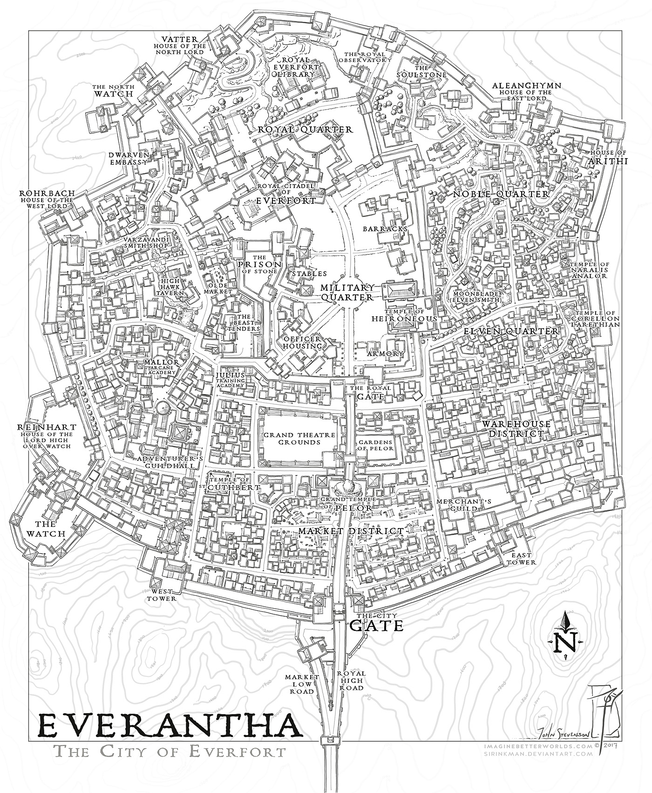

Terranova es un planeta en constante transformación debido a la convergencia de seres primigenios, fuerzas arcanas desatadas y portales entre planos de la existencia.
El mundo conocido se divide en dos continentes principales: Nahiyar en el oeste y Zemynas en el este, cada uno marcado por estructuras geopolíticas y climáticas únicas.
1. Reinos Santos — Continente Nahiyar
En Nahiyar conviven dos grandes naciones bajo una misma fe primigenia, dividida por el cisma de sus deidades: el reino de Farol Blanco (devoto de los Fragmentos de la Luz) y el Dominio de la Custodia / Bastión de la Piedra Negra (seguidores de los Guardianes de la Oscuridad).
La Guerra Santa es el conflicto militar secular que enfrenta a ambos reinos, impulsado por sus Adalides y Clérigos para consolidar el dominio único de su panteón.
2. Monarcas — Gobernantes y Dioses
Las divinidades de Terranova se clasifican según su origen cósmico:
✨ Fragmentos de La Luz
- Kalia: Monarca del Brillo, Reina de la Vida.
- Legia: Monarca del Comienzo, Rey de los Gigantes.
- Tarnak: Monarca de la Sociedad, Rey de los Humanoides.
🌑 Guardianes de la Oscuridad
- Ashborn: Monarca de las Sombras, Rey de los Muertos.
- Antares: Monarca de la Destrucción, Rey de los Dragones.
- Rakan: Monarca de lo Salvaje, Rey de las Bestias.
- Querehsha: Monarca de las Plagas, Reina de los Insectos.
3. El Reino "Farol Blanco"
Nación costera al norte de Terranova donde la tecnología arcana y los milagros divinos coexisten. La Catedral Reflejo Blanco alberga en su cúspide la mística reliquia "Farol Blanco". Se organiza administrativamente en tres capitolios principales:
- Capitolio Azul: Centro de educación y recursos. Incluye la Universidad de Quarzo, los Campos Elisios y el Puerto del Mañana.
- Capitolio Amarillo: Núcleo de desarrollo tecnológico, militar y religioso.
4. El Reino "Dominio de la Custodia"
Ubicado en el sur, esta nación se extiende principalmente por vastas estructuras subterráneas bajo la Cordillera Obsidiana. Su centro es el Bastión de la Piedra Negra, lugar de nacimiento de la Santa Magia. En sus niveles más profundos vigilan celosamente un portal estable hacia el plano del Shadowfell.
5. Continente Zemynas
Zemynas comprende cuatro grandes regiones con climas y ecosistemas extremos:
- Abismos de la Luna Plateada: Cordilleras nevadas y cavernas de cristal donde habita la tribu Rotes Auge junto a pozos de lava activos.
- Asarha: Páramo desértico y zonas de urdimbre salvaje donde habitan dragones cromáticos alrededor del volcán Pulso Rojo.
6. Brisa Verde & Everantha
Brisa Verde es la región más próspera de Zemynas. Alberga tres reinos en paz relativa:
- Everantha: Capital comercial del planeta, gobernada por la casa real y las familias nobles (Casa Anchieta, Casa Reinhart, Casa Rorbach).
- El Kairo: Ciudad militar gobernada por la línea de sangre del más fuerte (Familia Dimitry).
- Tollian: La cuna del conocimiento y la erudición, gobernada por un consejo de sabios embozados.

Plano cartográfico del reino comercial de Everantha
7. Eternal Jungle
Ubicada al sur de Zemynas, la Eternal Jungle es la encarnación de la naturaleza indómita. El bosque posee un aura consciente propia que expande sus fronteras y devora a cualquier expedición no invitada.